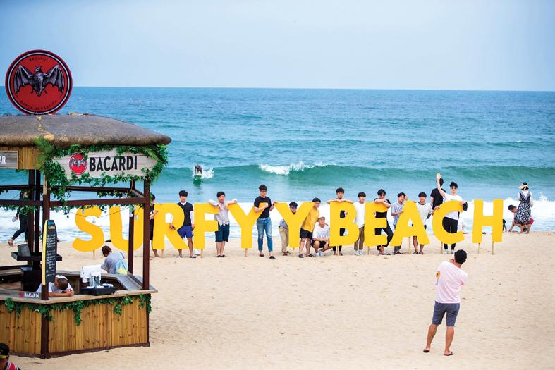

ESTP 추천 여행지
강원도 양양

추천 이유
ESTP는 새로운 경험과 액티비티를 즐기는 모험가형 성향입니다. 양양은 국내 대표 서핑 명소로 다양한 해양 스포츠를 체험할 수 있으며, 자유롭고 활기찬 분위기가 ESTP의 에너지와 잘 어울리는 여행지입니다.
추천 여행 코스
- 서피비치
- 서핑 강습 및 체험
- 죽도해변
- 인구해변 카페거리
- 낙산사
추천 포인트
- 서핑과 해양 스포츠 체험 가능
- 젊고 자유로운 여행 분위기
- 바다와 감성 카페를 함께 즐길 수 있음
- 활동적인 여행을 선호하는 사람에게 적합